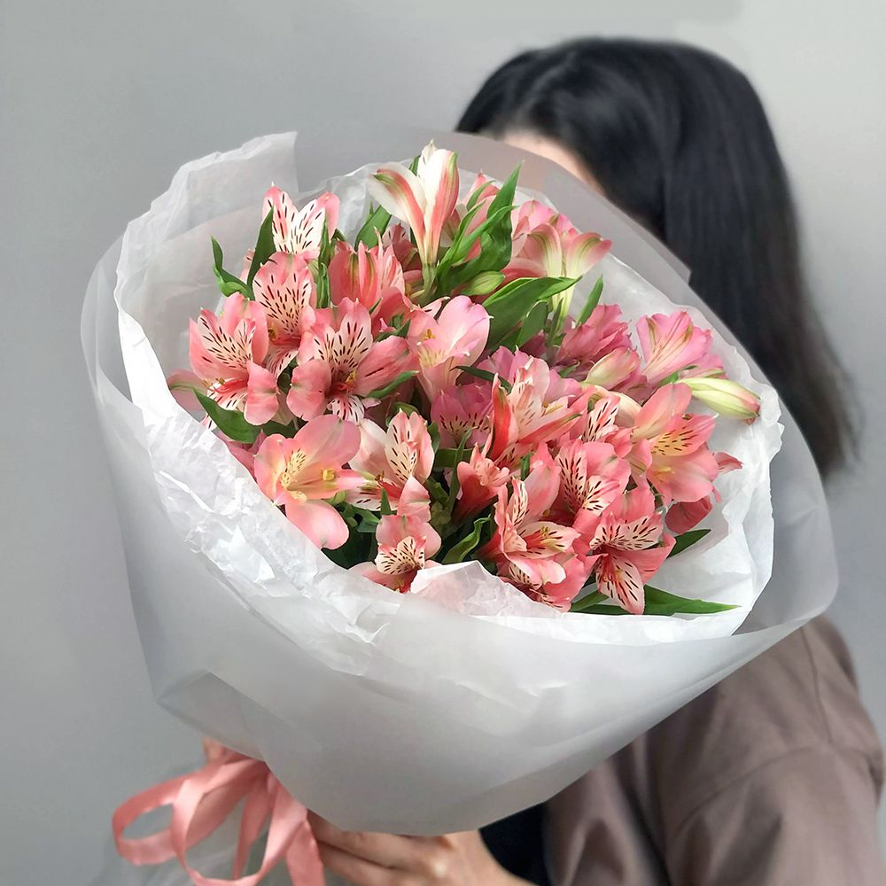

Альстромерия — изящный, экзотический цветок, напоминающий миниатюрную лилию. Символ дружбы, удачи и благополучия. Отличается невероятной стойкостью.
Альстромерия родом из Южной Америки, из высокогорных районов Перу, Чили и Бразилии. В Европу цветок попал в XVIII веке благодаря шведскому ботанику Класу Альстрёмеру, ученику Карла Линнея, в честь которого и назван. У альстромерии очень красивые, пёстрые лепестки — на них всегда есть характерные полоски и крапинки тёмного цвета. Цветовая гамма поражает разнообразием: белые, розовые, красные, оранжевые, жёлтые, фиолетовые. Одна веточка альстромерии несёт сразу несколько бутонов, которые раскрываются постепенно, поэтому букет долго остаётся свежим и объёмным. Стебли альстромерии прямые и прочные, листья узкие и длинные. У альстромерии нет аромата — это идеальный цветок для людей, чувствительных к запахам.